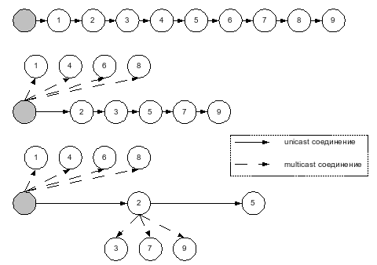

mcp представляет из себя утилиту для копирования одного или нескольких файлов на несколько узлов в сети интернет одновременно, при этом, по возможности, максимально быстро. Начальная версия не включает в себя возможности выбора пользователя, под которым создавать файлы, аутентификации, сжатия или защиты информации. Все файлы на одном узле-получателе создаются от имени одного пользователя, под которым запущен демон.
В основе работы mcp лежат два метода копирования файлов, названные как pipelined copy и multicast copy.
В этом методе источник и получатели рассматриваются как цепочка из узлов (источник, получатель 1, получатель 2, ...), каждый из которых копирует файл следующему по цепочке через TCP соединение, при этом каждый узел не дожидается получения файла целиком. При получение очередной порции файла, он записывает ее на диск и пересылает следующему по цепочке получателю. Таким образом файл копируется сразу на несколько узлов. Схематично этот способ передачи данных изображен на рис. 1.
| рисунок 1. Pipelined copy |
При копировании все файлы подписываются MD5 контрольными суммами, которые проверяются при получении. Также если возможность повторной проверки контрольной суммы при прочтении записанного файла с диска, однако в текущем варианте утилиты это будет замедлять копирование нескольких файлов на время повторной проверки контрольных сумм. При несовпадении контрольной суммы для файла на некоторых получателях производится повторное отправление файла, этим получателям. Копирование нескольких файлов производится асинхронно, чтобы избежать задержек в случае копирования большого количества небольших файлов. При этом отправитель начинает копирование следующего файла, не дожидаясь уведомления об успешном получении предыдущего файла. Все ошибки, в том числе запросы на повторное отправление файлов, доставляются обратно по цепочке к источнику, где обрабатываются при получении или в конце сеанса. Повторное отправление файлов было вынесено за пределы протокола, то есть для повторного отправления устанавливается новый сеанс.
В этом случае для копирования используется link-local multicast трафик от отправителя. Для обеспечение надежности доставки информации вводится условное понятие multicast соединения. В рамках multicast соединения обеспечивается надежная доставка сообщений (не потока) от отправителя к получателям. Принцип работы multicast соединения можно разделить на три основные части: установление соединения, доставка сообщений в рамках соединения, завершение соединения.
Каждое multicast сообщение, содержит поля number и responder. Поле number содержит порядковый номер данного сообщение в рамках соединения начиная с нуля. По этому полю узлы определяют, какие сообщения были потеряны и посылают запросы на повторное отправление для этих сообщений. Поле responder содержит ip адрес узла, который должен ответить на это сообщение или адрес 255.255.255.255, если никто не должен отвечать на это сообщение. Узел, у которого IP адрес совпадает со значением поля responder, отправляет ответ на это сообщение, после того как были получены все предыдущие сообщения, таким образом подтверждая получение всех предыдущих сообщений. Отправитель хранит копии всех отправленных сообщений, для которых не было получено подтверждение от всех узлов, на сличай если потребуется повторное отправление сообщений. Если очередь сообщений полна, отправитель начинает повторно посылает сообщения, которые не были подтверждены. Ошибки возникшие при передаче, например, несовпадение контрольной суммы, доставляются отдельно от остального трафика при помощи unicast UDP трафика.
Завершение соединения происходит аналогично установлению соединения и осуществляется при помощи синхронного multicast сообщения - запрос на завершение соединения. Узлы подтверждают получение такого сообщения после получения всех предыдущих сообщений и доставки всех ошибок отправителю. После завершения соединения узлы переходят в состояние TIME_WAIT аналогичное состоянию TCP, в этом состоянии они лишь отвечают на повторные отправления запроса на завершение соединения.
mcp может работать по принципу pipelined copy, multicast copy или используя объединения этих двух принципов следующим образом. Узлы выстраиваются в цепочку, так же как и в случае pipelined copy. Перед передачей информации, первый узел в цепи сначала пытается установить multicast соединение со всеми узлами-получателями оставшейся цепочки. Те узлы, с которыми удалось установить соединение исключаются из цепочки. Таким образом цепочка перестраивается, и алгоритм установления соединения повторяется для следующего узла цепочки. Схематично это изображено на рис .2.
|
 |
| рисунок 2. Принцип работы mcp |
mcp - это клиент-серверное приложение. mcp можно собрать из trunk-a (svn co http://svn.park.rambler.ru/svn/jupiter/trunk/replicator) командами:
$ cmake . $ make # make install
На каждом из узлов, которые могут служить получателями файлов, запускается демон mcpd. Формат команды для запуска демона следующий:
Usage:
./mcpd [options]
Options:
-a address
Specify an IP address the server will use. By default,
server will accept connections to all the local addresses.
-p port
Specify port the server will use for both unicast and multicast
connections instead of the default ports (6879, 6879).
-P port
Specify port the server will use for multicast connections
instead of the default port (6879).
-c number
Set limit to the maximum number of simultaneous connections.
-b value
Set limit for the total incoming bandwidth (suffix 'm' -
megabits/second, suffix 'M' - megabytes/second,
without suffix - bytes/second).
-u UID Change UID, GID and home directory for the process.
-U Unicast only (don't accept multicast connections).
-m Multicast only (don't accept unicast connections).
-d Run server in the debug mode (don't go to the background,
log messages to the standard out/error, and don't fork on
incoming connection).
Для копирования фалов используется утилита mcp, которая имеет следующий формат
Usage:
./mcp [options] file server1[:location1] [...]
./mcp [options] file1 [...] \; server1[:location1] [...]
Options:
-p port
Specify port the server will use for both unicast and multicast
connections instead of the default ports (6879, 6879).
-P port
Specify port the server will use for multicast connections
instead of the default port (6879).
-U Unicast only (for all hops).
-u Unicast only (for the first hop).
-m Multicast only.
-g interface
Try to establish multicast connection with all the destinations,
not only the link-local ones. Use the specified interface for
for multicast traffic.
-c Tells receivers to verify the file checksums twice.
The second verification performed when all the file data
has been written to the disk. This option has no effect
for the multicast transfer mode.
-b value
Set per-sender bandwidth limit (suffix 'm' - megabits/second,
suffix 'M' - megabytes/second, without suffix - bytes/second).
-f rate
Set fixed-rate mode for the multicast transfer. Rate is
specified in bytes/second (suffix 'm' - megabits/second,
suffix 'M' - megabytes/second).
-o Preserve the specified order of targets during the pipelined
transfer.
Примеры:
img000 # /usr/local/bin/mcpd -u search img015 # /usr/local/bin/mcpd -u search img007 # /usr/local/bin/mcpd -u search localhost $ /usr/local/bin/mcp /etc/X11/xorg.conf \; img000: img015: img007:
$ /usr/local/bin/mcp -m /usr/local/bin \; host1:/tmp host2:/tmp host3:/tmp host4:/tmp host5:/tmp
$ /usr/local/bin/mcp -g bge0 -m file1 file2 file3 \; host1:a host2:a host3:a host4:a host5:a
$ /usr/local/bin/mcp -g bge0 -m -b 100m file \; host1 host2 host3 host4 host5
$ /usr/local/bin/mcp -g bge0 -m -f 260m file \; host1 host2 host3 host4 host5
$ /usr/local/bin/mcp -g bge0 -b 150m file \; host1 host2 host3 host4 host5 host6 host7
Если, t - это время, достаточное для копирования файла между двумя любыми узлами, участвующими в операции, а n - количество получателей (n >= 2), то при отсутствии постороннего трафика можно ожидать следующие приближенные оценки для времени копирования одного файла (не включая время на установление и разрыв соединения.
{kind=link}
{kind=link}